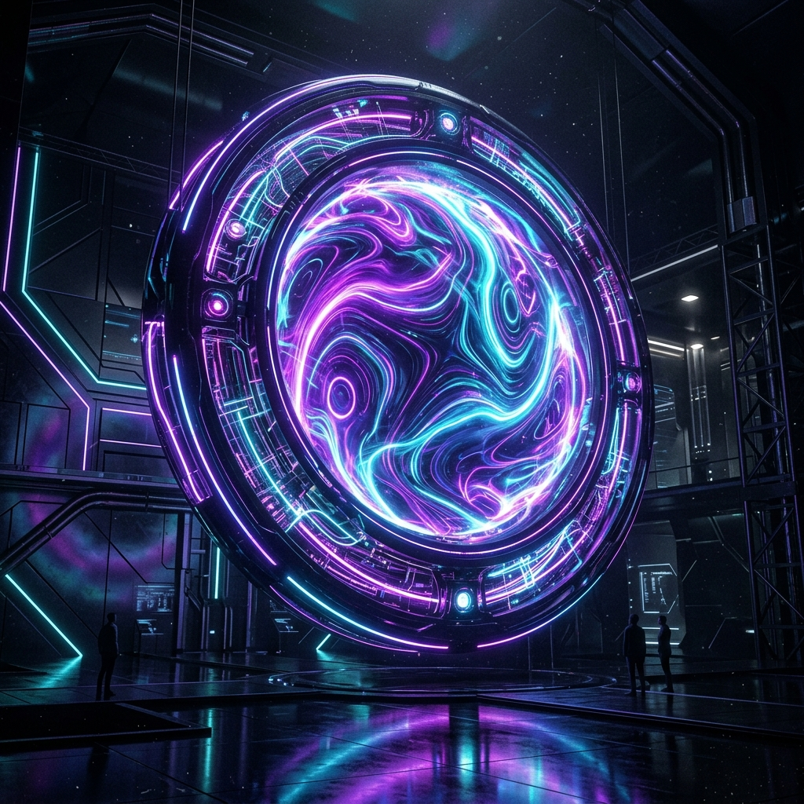

Accelerated Tech & Cloud Observations.
A streamlined platform designed to distribute clear technical walkthroughs, automated Git architectures, and highly visual market knowledge.
Technical Library
Comprehensive analyses, architectural overviews, and setup strategies.

Automating Enterprise IAM Structures
A deep-dive blueprint detailing service-level authorization patterns across modular cloud environments.
Zero-Trust Serverless Edge Workflows
Accelerating stateless interactions using decoupled CI/CD GitOps methodologies.
Visual Tutorials & Walkthroughs
Interactive demonstrations allowing for highly accessible multi-media consumption.